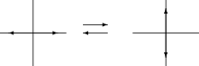
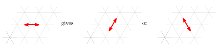
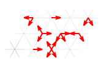
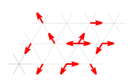
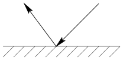
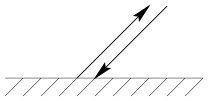
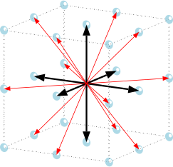
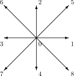

Part I · Foundations of the Lattice Boltzmann Method — Chapter 1
Lattice gases
1.1 Characteristics of Boolean models
These models consist of indistinguishable particles moving synchronously on a regular lattice. Only the absence or presence of particles at a given site of the lattice matters here. One can therefore encode this type of model in a Boolean way, hence the generic name Boolean lattice gas.
The main characteristics of this type of model are:
- Regular lattice
-
The simulation space is discretized by a regular “crystalline” lattice of high symmetry.
- Time discretization
-
At each time step, particles “jump” from one site to one of the neighboring sites through a set of discrete velocities.
- Identical particles
-
The particles have identical mass and are indistinguishable.
- Exclusion principle
-
Depending on the type of lattice used, a node is connected to a certain number of neighboring nodes. Several particles can thus coexist at a single node, but at most one per velocity.
- Conservation of mass and momentum
-
The particles located at a single node can interact while conserving mass (the number of particles) and momentum.
1.2 HPP model
The HPP model (named after its inventors Hardy, de Pazzis and Pomeau) [14] is historically the first Boolean lattice gas model (1973) attempting to reproduce hydrodynamics. As such it is interesting because it allows one to address the main characteristics of this class of models.
1.2.1 Algorithmic description
The lattice used is a square lattice, each node is therefore connected to four nearest neighbors.
The evolution of the system can be decomposed into three main steps common to all lattice gas methods.
Collisions
Propagation
Boundary conditions
These three steps are carried out at each time step, and each time step consists of these three steps.
1.2.1.1 Collisions
This step is purely local and involves only the particles located at a single node. The goal is to make the particles interact while conserving mass and momentum. On a square lattice the only possible interaction is the head-on collision of two particles.

This can be written in Boolean notation (taking as convention a numbering of the directions in the trigonometric (counterclockwise) sense)
\[(1,0,1,0) \quad \Longleftrightarrow \quad (0,1,0,1)\]
The other configurations do not interact and are therefore unchanged after the collision step.
1.2.1.2 Propagation
The particles present at each node “jump” toward the nearest node in their respective direction. This step is the only one that requires a temporal notion and communication between neighboring nodes. It is therefore the only step to modify when programming on a parallel machine. This makes these algorithms an ideal candidate for parallelization.
1.2.2 Possibilities and limits of this model
Although interesting from a theoretical point of view, particularly in statistical mechanics, this model poorly accounts for hydrodynamic phenomena. Indeed the spatial discretization imposed by the square lattice does not allow one to obtain isotropic macroscopic characteristics for the fluid.
A large number of “spurious” (non-physical) quantities are conserved during the evolution of the system. In particular, due to the reduced number of interactions between particles, momentum is conserved on each row and each column. This conservation of momentum along the line parallel to the flow does not allow viscous dissipation, and it follows that the shear of the fluid does not damp along this axis, which makes impossible the simulation of a shear flow directed along an axis of the lattice.
1.3 FHP model
It was only in 1985 that these problems were solved by Frisch, Hasslacher and Pomeau, simply by changing the structure of the lattice used. A triangular mesh, often called hexagonal lattice, restored isotropy and allowed one to recover the Navier-Stokes equations for a compressible fluid at low Mach number. This is due to the isotropy of a fourth-order tensor appearing in the derivation of hydrodynamics.
1.3.1 Algorithmic description
The evolution steps of the system are the same as for the HPP model. However, the triangular structure of the mesh allows many more combinations during the collision step and thus ensures the elimination of most of the spurious invariants of the HPP model. In addition, this increase in the number of degrees of freedom of the system allows one to decrease the kinematic viscosity of the simulated fluid.
1.3.1.1 Collisions
This model introduces a new notion, that of non-determinism of collisions. Indeed in the case where several combinations are possible, it is necessary for reasons of isotropy to choose one at random.

1.3.1.2 Propagation
This step is performed identically to the HPP model, but this time each node is connected to six neighbors.


1.3.1.3 Boundary conditions
In general for lattice gas methods (Boolean or not), one can use three types of boundary conditions that allow one to avoid “losing” particles in the propagation step as in the previous figure:
Periodic conditions
This type of condition is obtained by reinjecting the particles leaving on one side of the simulation space onto the opposite side. This type of boundary condition is particularly simple to implement in this method.
Particle injection
To simulate a continuous flow from one edge to the other of the simulation space, one can “inject” particles, that is to say impose on the inlet and outlet edges a given distribution of particles. For example, the equilibrium distributions for a given velocity and density.
Collisions with obstacles
Here the idea is to make a node defined as an obstacle node interact with the incident particles. There are two main types of collisions:
Specular reflection
This type of condition corresponds to a perfectly non-adhering obstacle. The particle bounces on the obstacle, the angle of reflection remaining equal to the angle of incidence.

Figure 1.4: Specular reflection condition Pure reflection (Bounce-Back)
This type of condition corresponds to a perfectly adhering obstacle (zero-velocity condition at the boundary). It is sufficient to send an incident particle back in the opposite direction.

Figure 1.5: Pure reflection condition (Bounce-Back)
1.4 FCHC model
The models we have addressed so far are two-dimensional, one may ask the question of a possible three-dimensional extension of the model.
The task is in fact to find a three-dimensional lattice possessing the right symmetry properties: the isotropy of the fourth-order tensors appearing in the derivation of the hydrodynamic equations.
The only candidate would be a lattice made of dodecahedra or icosahedra [13], but it is impossible to find a regular tiling of space with them. An elegant solution was found by d’Humières, Lallemand and Frisch [29]. In four dimensions, the lattice made of Face Centered Hyper-Cubes (Face Centered Hyper Cube) possesses the right symmetry properties. It is then sufficient to use a four-dimensional lattice and project it into three dimensions. Nothing prevents, of course, projecting this model only into three dimensions; one can also project it into two dimensions, which allows one to have an underlying square lattice.
1.4.1 Structure of the FCHC lattice
1.4.1.1 Velocity vectors
In an FCHC lattice each of the nodes is connected to 24 neighbors. There are therefore for a given particle 24 possible velocity vectors. Their components are \[\begin{eqnarray} (\pm 1,\pm 1,0,0) & (\pm 1,0,\pm 1,0) & (\pm 1,0,0,\pm 1) \nonumber \\ (0,0,\pm 1,\pm 1) & (0,\pm 1,0,\pm 1) & (0,\pm 1,\pm 1,0) \nonumber \end{eqnarray}\]
1.4.1.2 Projections
It is of course tricky to visualize a face-centered hypercube. One can however visualize its projection in three or two dimensions. The directions having the same first \(d\) components superpose in \(d\)-dimensional space.

The velocities printed in bold come from two velocities of the four-dimensional model and must be counted twice in the subsequent calculations to respect isotropy.

The median velocities \((1,2,3,5)\) as well as the \(0\) velocity will be counted four times because they come from four projections of velocity vectors of the four-dimensional lattice. On the other hand, the diagonal directions will be counted only once.
1.5 Formalism
It is important to note that all these models differ only in the shape of the lattice used. A distinction is made between cubic lattices and hexagonal lattices. To distinguish them, the following generic notation has been proposed [35]: DnQb where \(n\) is the dimension of space and b the number of velocities. For our part, we will denote the different models, when there is a risk of confusion, according to the type of lattice, the dimension and the norm of their velocities by: DnTl1.l2.. where \(n\) still denotes the dimension of space, T is now the type of lattice used, C for cubic lattices and H for hexagonal lattices. The quantities l1,l2,...lm denote the square of the norm of the different velocity vectors. We will thus have the model D2C1.2, previously denoted D2Q9, the zero-modulus velocity always being counted by default. The FCHC lattice can also be denoted D4C1-, the “-” sign indicating that it does not possess a zero-norm velocity. All models based on these lattices possess the same evolution algorithm. The propagation and boundary condition phases are almost identical. Only the possible collision combinations vary.
This allows one to create a formalism common to all Boolean lattice gas models.
1.6 Microdynamic equation
Let \(C = \left\{\vec{c}_{i}, i \in (1 \dots b)\right\}\) be the set of all possible velocity vectors for a particle on a given lattice. For example for FHP (D2Q6 or D2H1-)
\[C = \left\{\vec{c}_{i} = (\cos i\pi/3, \sin i\pi/3), i \in (1 \dots 6)\right\}\]
Let \(n_{i}(\vec{x}, t)\) be a Boolean variable encoding the presence or absence of a particle in direction \(i\) at node \(\vec{x}\) at time \(t\).
Let \({\mathbf{n}}(\vec{x},t) = \{n_{i}(\vec{x}, t), i \in (1 \dots b)\}\) be the variable describing the state of a node.
The microdynamic evolution equation of the system including collisions and propagation can then be written
\[\begin{equation} \label{evolutionbooleenne} n_{i}(\vec{x}+\vec{c}_i, t + 1) = n_{i}(\vec{x}, t) + \Delta_i\left[{\mathbf{n}}(\vec{x}, t)\right]. \end{equation}\]
1.7 Collision operator
The operator \(\Delta\) describes the modification of the value of each of the quantities \(n_{i}\) due to collisions.
For example, for the three-body collision of the FHP model (figure 1.2) \[\begin{eqnarray} \Delta_i^{(3)} & = & n_{i+1}n_{i+3}n_{i+5}(1-n_{i})(1-n_{i+2})(1-n_{i+4})- \nonumber \\ && n_in_{i+2}n_{i+4}(1-n_{i+1})(1-n_{i+3})(1-n_{i+5}), \nonumber \end{eqnarray}\]
where the index \(i\) is taken modulo 6 when it varies cyclically in the interval \([1:6]\).
One can note that it is in fact only an algebraic transcription of a sequence of logical operations (AND = \(\times\), OR = \(+\), NOT = \((1-x)\)) describing the collision conditions.
The complete collision operator \(\Delta\) will be constituted by the sum of elementary operators describing, like \(\Delta_i^{(3)}\), a particular collision configuration.
1.8 Properties of the collision operator
The evolution equation (1.1) must satisfy the conservation principles.
Conservation of mass
The number of particles must be conserved. That is \[\begin{equation} \sum_i n_i(\vec{x}+\vec{c}_i,t+1)=\sum_i n_i(\vec{x},t) \end{equation}\] which constitutes the mass conservation equation of the lattice gas. This implies
\[\begin{equation} \sum_i \Delta_i({\mathbf{n}})=0. \end{equation}\]
Conservation of momentum
In the same way,
\[\begin{equation} \sum_i \vec{c}_i n_i(\vec{x}+\vec{c}_i,t+1)=\sum_i \vec{c}_i n_i(\vec{x},t), \end{equation}\]
which constitutes the momentum conservation equation of the lattice gas. This implies
\[\begin{equation} \sum_i \vec{c}_i \Delta_i({\mathbf{n}})=0. \end{equation}\]
1.9 Macroscopic equations
One can derive, through a multi-scale expansion, from the conservation relations, the macroscopic equations that govern the behavior of the fluid [22]. The technique is then identical to the one we will present for the lattice Boltzmann equation in the remainder of this thesis. It allows one to demonstrate, at second order of precision with respect to a small parameter, that these macroscopic equations differ from the Navier-Stokes equations only in that they do not respect the principle of Galilean invariance.
References cited in this chapter
- [13] S. Wolfram, “Cellular automaton fluids 1: basic theory”, J. Stat. Phys., Vol. 45, 1986, pp. 471-526. ↗
- [14] J.O. Hardy, O. de Pazzis and Y. Pomeau, “Molecular dynamics of a classical lattice gas transport properties and time corelation functions”, Phys. Rev. A 13, (1976) pp. 1949-1961. ↗
- [22] U. Frisch, D. d’Humières, B. Hasslacher, P. Lallemand, Y. Pomeau, J.P. Rivet, “Lattice gas hydrodynamics in 2 and 3 dimensions”, Complex Systems 1 (1987) pp. 648-707 ↗
- [29] D. d’Humières, P. Lallemand and U. Frisch “Lattice Gas Models for 3-D Hydrodynamics”, Europhys.Lett. 2 (4) pp. 291-297 (1986) ↗
- [35] Y.H. Qian, D. d’Humières,and P. Lallemand, “Lattice BGK Models for Navier-Stokes Equation,” Europhysics Letters, Vol. 17(6), 1992, pp. 479–484. ↗